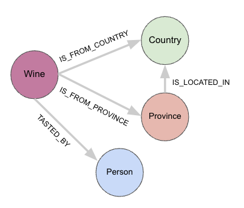
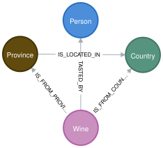

Using Pydantic and async Python to build a graph in Neo4j
Neo4j has been among the world’s most popular graph databases for a while now, and I really enjoy working with it, and graphs in general. A quick Google search reveals a lot of blog posts and tutorials that show how to bulk-load data into Neo4j via Cypher, Neo4j’s query language, or APOC (Awesome Procedures on Cypher). If you’re a Python engineer like me (because, ugh, Java 😖), and are looking to use Python all the way to ingest large amounts of data into Neo4j in the most efficient way possible, read on!
But first, let’s take a step back, and ask ourselves, when APOC and Cypher can do the job, why involve Python at all?
- You may already have other data-handling and analysis code written in Python, so switching to another language like Java or bash scripts for Neo4j can be a chore.
- Using a data validation framework like Pydantic allows you to increase the robustness of the ETL process, while staying within the world of Python and not have to glue together tools written in multiple languages.
- Async code that performs I/O can be fast. Most database Python clients these days implement asynchronous clients to communicate with databases in a non-blocking manner, and Neo4j is no exception.
- Python’s
asyncioAPI has evolved a lot since its early days, and it’s actually now quite easy to use, with minimal changes in code from the sync version.
Combining data validation via Pydantic with async data ingestion can make for fast, efficient and readable Python code that can be maintained by future engineers without having to deal with a mess of glue code. With that in mind, let’s get started with an example!
The data
We’ll be working with this wine reviews dataset from Kaggle. It consists of 130k wine reviews from the Wine Enthusiast magazine, including the variety, location, winery, price, description, and some other metadata for each wine. Refer to the Kaggle source for more detailed information on the data and how it was scraped. The original data was downloaded as a single JSON file. For the purposes of this blog post, the data was then converted to newline-delimited JSON (.jsonl) format where each line of the file contains a valid JSON object.
An example JSON line is shown below.
{
"points": "90",
"title": "Castello San Donato in Perano 2009 Riserva (Chianti Classico)",
"description": "Made from a blend of 85% Sangiovese and 15% Merlot, this ripe wine delivers soft plum, black currants, clove and cracked pepper sensations accented with coffee and espresso notes. A backbone of firm tannins give structure. Drink now through 2019.",
"taster_name": "Kerin O'Keefe",
"taster_twitter_handle": "@kerinokeefe",
"price": 30,
"designation": "Riserva",
"variety": "Red Blend",
"region_1": "Chianti Classico",
"region_2": null,
"province": "Tuscany",
"country": "Italy",
"winery": "Castello San Donato in Perano",
"id": 40825
}
The graph data model
The first key step is conceptualizing a data model for the graph. This primarily depends on the kinds of questions we’re trying to answer. In this dataset, each JSON blob contains information about one particular wine, but, conceptually, how are the wines themselves connected to each other?
Inspecting the JSON sample above, we can see that there is not only a rating and price information for each wine, but also location information (country, province, region, etc.). Each wine is also tasted by a reviewer, who is a person in the real world with a Twitter handle.
Where graphs really shine
The reason that graph databases are really useful in certain situations is best illustrated with an example. Imagine you’re building a query API for wine enthusiasts that follow wine reviewers on Twitter. Suppose these end users are interested the following question:
“Which wine varieties have been most often tasted by my favourite reviewer, Roger Voss, and what countries are those wines from”?
This seems like a reasonable enough question. But the problem is, our dataset is in the form of individual JSON blobs (as shown above), where each wine reviewer’s name and Twitter handle is associated with a single wine, and the reviewer’s name appears many, many times over the entire dataset. A conventional NoSQL data store (like MongoDB) would require an aggregation query built as a pipeline to answer this question, where it would first calculate the number of wines tasted by a person, apply the necessary grouping clauses to gather the wine variety and the country of origin, and finally return the answer. Not only is this approach computationally expensive as the dataset gets larger and larger, it’s also exceptionally unintuitive to us as human beings to reason about.
Our human minds tend to see the real world as hierarchies of concepts and entities, and graphs, due to their inherent “connected” nature, make it very easy to reason about the data model that can help us answer a given question. With this in mind, the following graph model makes sense.

We can view each JSON blob as a Wine node, that connects to a Person node, where the Person is a taster. In addition, each wine is also connected to a Country node and a Province node, with each type of location indicating where the wine originates. In addition, a Province can be located in a Country, but not the other way around. The above data model encapsulates all of these real-world relationships nicely, capturing both the nature and the direction of the relationship, and as an added bonus, makes querying a lot easier as well.
If the data is modelled this way, the following Cypher query in Neo4j answers the original question in just a few lines of code:
-- Which wine varieties have been most often tasted by my favourite reviewer, Roger Voss,
-- and what countries are those wines from?
MATCH (wine:Wine)-[:TASTED_BY]->(taster:Person {tasterName: "Roger Voss"})
WITH wine, taster
MATCH (wine)-[r:IS_FROM_COUNTRY]->(country:Country)
RETURN
taster.tasterName AS tasterName,
wine.variety AS wineVariety,
count(r) AS winesTasted,
country.countryName AS country
ORDER BY winesTasted DESC, tasterName LIMIT 5
The result would look something like this:
╒════════════╤══════════════════════════╤═══════════╤══════════╕
│tasterName │wineVariety │winesTasted│country │
╞════════════╪══════════════════════════╪═══════════╪══════════╡
│"Roger Voss"│"Bordeaux-style Red Blend"│4702 │"France" │
├────────────┼──────────────────────────┼───────────┼──────────┤
│"Roger Voss"│"Chardonnay" │2724 │"France" │
├────────────┼──────────────────────────┼───────────┼──────────┤
│"Roger Voss"│"Portuguese Red" │2462 │"Portugal"│
├────────────┼──────────────────────────┼───────────┼──────────┤
│"Roger Voss"│"Pinot Noir" │1827 │"France" │
├────────────┼──────────────────────────┼───────────┼──────────┤
│"Roger Voss"│"Rosé" │1555 │"France" │
└────────────┴──────────────────────────┴───────────┴──────────┘
We can see that Roger Voss is a hugely prolific wine taster! And a quick Google search reveals the same – Between 2009-2013, Roger had tasted over 3,000 Bordeaux-style red wines! And our dataset in this blog post is from 2017, by which time he managed to taste over 4,700 of them! 🤯
In just a few lines of Cypher, we were able to answer a query that might have taken quite a bit more lines (of less-readable JSON) in another database like MongoDB.
Data ingestion into Neo4j
With that bit of background out of the way, let’s look at how to build such a graph in Neo4j using Python. As mentioned before, the following ETL best practices are baked into this process:
- Data quality: The data is validated via Pydantic to ensure that the types align with what we expect during querying
- Performance: The Cypher queries that actually perform the merging operations are written with efficiency, quality and scalability in mind
Read the data in chunks
To get the best performance (as the Neo4j official Cypher docs), we read the data in batches of 10k-25k records, and make use of WITH and UNWIND clauses in Cypher to expand a given list of JSON blobs into individual records before ingesting them into Neo4j.
💡 Performance tip
For best performance, always aim to pass a large chunk of JSON blobs (i.e., in Python-speak, a “list of dicts”) to your ingestion function and
UNWINDthem in Cypher, rather than passing each JSON blob individually. This minimizes the I/O overhead between Python and Neo4j.
import srsly
def chunk_iterable(item_list: list[JsonBlob], chunksize: int) -> Iterator[list[JsonBlob]]:
"""
Break a large iterable into an iterable of smaller iterables
"""
for i in range(0, len(item_list), chunksize):
yield item_list[i : i + chunksize]
def get_json_data(data_dir: Path, filename: str) -> list[JsonBlob]:
"""Read in data from a JSONL file using srsly"""
file_path = data_dir / filename
if not file_path.is_file():
raise FileNotFoundError(f"No valid .jsonl file found in `{data_dir}`")
else:
data = srsly.read_gzip_jsonl(file_path)
return data
data = get_json_data("/path_to_data/", "winemag-data-130k-v2.jsonl")
chunked_data = chunk_iterable(data, CHUNKSIZE=10_000)
This snippet shows how to read data from a .jsonl.gz file using srsly, an efficient and light-weight JSON serialization/deserialization Python library. The data from winemag-data-130k-v2.jsonl is read in and chunked into batches of size 10,000. That is, each chunk contains a list of 10,000 individual wine reviews, all the way up to 130k reviews.
Validate the data
A Pydantic schema is created to ensure specific fields exists and that the data is of the expected type prior to passing it to the Neo4j graph. As can be seen below, we state via the Pydantic schema that the fields id, points and title are required fields, and in case they are absent in the data, Pydantic will raise an error, not allowing the record to be ingested to the database.
from pydantic import BaseModel, Field, validator
class Wine(BaseModel):
id: int
points: int
title: str
description: str | None
price: float | None
variety: str | None
winery: str | None
country: str | None
province: str | None
region_1: str | None
region_2: str | None
# Rename the `designation` field to `vineyard` so it's more intuitive to end user
vineyard: str | None = Field(alias="designation")
taster_name: str | None
taster_twitter_handle: str | None
@validator("country", pre=True)
def validate_country(cls, value: str | None) -> str:
# Ensure we have a non-null country value
if value is None:
return "Unknown"
return value
💡 Why enforce a schema?
Even though Neo4j doesn’t enforce schemas, it’s generally a good practice to specify a schema via an external framework like Pydantic, with the appropriate data types in a production scenario so that there are no unintended bugs during ingestion, or while querying the data.
Define build query
The next step is to define a build query that UNWINDs the list of dicts into individual records that represent the nodes and edges in the graph.
build_query = """
UNWIND $data AS record
MERGE (wine:Wine {wineID: record.id})
SET wine += {
points: record.points,
title: record.title,
description: record.description,
price: record.price,
variety: record.variety,
winery: record.winery,
vineyard: record.vineyard,
region_1: record.region_1,
region_2: record.region_2
}
WITH record, wine
WHERE record.taster_name IS NOT NULL
MERGE (taster:Person {tasterName: record.taster_name})
SET taster += {tasterTwitterHandle: record.taster_twitter_handle}
MERGE (wine)-[:TASTED_BY]->(taster)
WITH record, wine
MERGE (country:Country {countryName: record.country})
MERGE (wine)-[:IS_FROM_COUNTRY]->(country)
WITH record, wine, country
WHERE record.province IS NOT NULL
MERGE (province:Province {provinceName: record.province})
MERGE (wine)-[:IS_FROM_PROVINCE]->(province)
WITH record, wine, country, province
WHERE record.province IS NOT NULL AND record.country IS NOT NULL
MERGE (province)-[:IS_LOCATED_IN]->(country)
"""
This build query, stored as a parameterized Cypher query via the Neo4j Python client, does the following:
UNWINDa list of 10,000 records into a sequence of “rows” that can be ingested into Neo4j much more efficiently than by passing each row individuallyMERGEeach wine as a:Winenode along with its metadata- The
MERGEkeyword is used as opposed to theCREATEkeyword to avoid creating duplicates (in case two wines with the sameidfields exist)
- The
MERGEeach wine’s taster as a:Personnode, along with the taster’s name and Twitter handleMERGEthe edge between the wine and its taster
MERGEeach wine’s country of originMERGEthe edge between the wine and its country of origin
MERGEeach wine’s province of originMERGEthe edge between the wine and its province of origin
MERGEthe edge between a province and the country it’s in
The above sequence of steps in the build query will correspond nicely with the graph data model defined above!
Option 1: Sync loader
The simplest way to wrap all this functionality in a usable function is to define a main function via the Neo4j Python client as follows:
def create_indexes_and_constraints(session: Session) -> None:
queries = [
# constraints
"CREATE CONSTRAINT countryName IF NOT EXISTS FOR (c:Country) REQUIRE c.countryName IS UNIQUE ",
"CREATE CONSTRAINT wineID IF NOT EXISTS FOR (w:Wine) REQUIRE w.wineID IS UNIQUE ",
# indexes
"CREATE INDEX provinceName IF NOT EXISTS FOR (p:Province) ON (p.provinceName) ",
"CREATE INDEX tasterName IF NOT EXISTS FOR (p:Person) ON (p.tasterName) ",
"CREATE FULLTEXT INDEX searchText IF NOT EXISTS FOR (w:Wine) ON EACH [w.title, w.description, w.variety] ",
]
for query in queries:
session.run(query)
def ingest_data(session: Session, validated_data: list[JsonBlob]) -> None:
for data in validated_data:
ids = [item["id"] for item in data]
try:
session.execute_write(build_query, data)
print(f"Processed ids in range {min(ids)}-{max(ids)}")
except Exception as e:
print(f"{e}: Failed to ingest IDs in range {min(ids)}-{max(ids)}")
def main(data: list[JsonBlob]) -> None:
with GraphDatabase.driver(URI, auth=(NEO4J_USER, NEO4J_PASSWORD)) as driver:
with driver.session(database="neo4j") as session:
# Create indexes and constraints
create_indexes_and_constraints(session)
# Ingest the data into Neo4j
print("Validating data...")
validated_data = validate(data, Wine, exclude_none=True)
# Break the data into chunks
chunked_data = chunk_iterable(validated_data, CHUNKSIZE=10_000)
print("Ingesting data...")
for chunk in chunked_data:
ids = [item["id"] for item in chunk]
try:
session.execute_write(build_query, chunk)
print(f"Processed ids in range {min(ids)}-{max(ids)}")
except Exception as e:
print(f"{e}: Failed to ingest IDs in range {min(ids)}-{max(ids)}")
In the above code, we open a regular (sync) GraphDatabase driver and a session object via their own context managers, so that the session and database driver exit cleanly upon completion. Note that a custom validate function is also defined as follows:
def validate(data: list[JsonBlob], exclude_none: bool = False) -> list[JsonBlob]:
validated_data = [Wine(**item).dict(exclude_none=exclude_none) for item in data]
return validated_data
This function unpacks each blob of JSON (which is a valid Python dict) into the Pydantic model, which validates it and throws an error if the data doesn’t conform to the schema specification. If all is well, the data is once again returned as a valid list of dicts for the next steps.
The following key steps are performed in sequence:
- Create appropriate indexes and constraints to speed up ingestion into Neo4j, as per the
create_indexes_and_constraintsfunction - Validate the entire dataset of 130k records in Pydantic via the
- Chunk up the data into lists of 10k records
- Iterate through each chunk
- Use the session’s
execute_writemethod to handle and manage transactions with Neo4j, and pass the build query to this object- The build query unwinds the batch and handles the rest of the work using Cypher
Sync run time for full data ingestion
💡 The timing numbers shown below are from an M2 Macbook Pro, running Python 3.11 and Neo4j 5.7..0 via Docker.
$ python bulk_ingest_sync.py
Validating data...
Elapsed time: 2.9791 seconds
Ingesting data...
Processed ids in range 1-10000
Processed ids in range 10001-20000
Processed ids in range 20001-30000
Processed ids in range 30001-40000
Processed ids in range 40001-50000
Processed ids in range 50001-60000
Processed ids in range 60001-70000
Processed ids in range 70001-80000
Processed ids in range 80001-90000
Processed ids in range 90001-100000
Processed ids in range 100001-110000
Processed ids in range 110001-120000
Processed ids in range 120001-129971
Elapsed time: 6.2240 seconds
Finished execution!
And that’s it! The standard sync Neo4j Python client was used to effectively read, validate and ingest the data into Neo4j, using just Python, all within roughly 9.5 seconds! Note that the the actual data ingestion took about 6.5 seconds on average across 3 runs, and data validation (for all 130K records) in Pydantic took ~3 seconds.
Option 2: Async loader
An alternative way to ingest the data into Neo4j is to use the async client, which applies Python’s async/await syntax to execute code in a non-blocking manner. All it requires is a few small changes to the existing code. Simply switch the existing Neo4j functions (including the build query one) to use the async/await syntax as follows.
async def create_indexes_and_constraints(session: AsyncSession) -> None:
queries = [
# Define constraints and indexes queries the same way as the sync function
]
for query in queries:
await session.run(query)
async def build_query(tx: AsyncManagedTransaction, data: list[JsonBlob]) -> None:
# Same build query as the sync one
query = """
UNWIND $data AS record
...
...
"""
await tx.run(query, data=data)
Each transaction with Neo4j is awaited, just like you would any other async function in Python. Then, the main function is modified as follows.
async def main(data: list[JsonBlob]) -> None:
async with AsyncGraphDatabase.driver(URI, auth=(NEO4J_USER, NEO4J_PASSWORD)) as driver:
async with driver.session(database="neo4j") as session:
# Create indexes and constraints
await create_indexes_and_constraints(session)
# Ingest the data into Neo4j
print("Validating data...")
validated_data = validate(data, Wine, exclude_none=True)
# Break the data into chunks
chunked_data = chunk_iterable(validated_data, CHUNKSIZE=10_000)
print("Ingesting data...")
for chunk in chunked_data:
# Awaiting each chunk in a loop isn't ideal, but it's easiest this way when working with graphs!
# Merging edges on top of nodes concurrently can lead to race conditions. Neo4j doesn't allow this,
# and prevents the user from merging relationships on nodes that might not exist yet, for good reason.
ids = [item["id"] for item in chunk]
try:
await session.execute_write(build_query, chunk)
print(f"Processed ids in range {min(ids)}-{max(ids)}")
except Exception as e:
print(f"{e}: Failed to ingest IDs in range {min(ids)}-{max(ids)}")
By just adding a few await keywords, and replacing def with async def, we have clean, readable code that can communicate with the Neo4j database asynchronously! The async main function is then simply invoked with an asyncio.run(main()) command. 🚀
Async run time for full data ingestion
$ python bulk_ingest_async.py
Validating data...
Elapsed time: 2.9732 seconds
Ingesting data...
Processed ids in range 1-10000
Processed ids in range 10001-20000
Processed ids in range 20001-30000
Processed ids in range 30001-40000
Processed ids in range 40001-50000
Processed ids in range 50001-60000
Processed ids in range 60001-70000
Processed ids in range 70001-80000
Processed ids in range 80001-90000
Processed ids in range 90001-100000
Processed ids in range 100001-110000
Processed ids in range 110001-120000
Processed ids in range 120001-129971
Elapsed time: 6.0603 seconds
Finished execution!
Just like in the sync case, the Pydantic validation for 130k records completes in ~3 sec, while the async data ingestion completes in ~6 seconds, giving us a roughly 9 second run time. Generally speaking, a coroutine-based async approach as shown above vastly outperforms the sync approach, but in this particular scenario, the async API offers only a marginal improvement. This is likely because, Neo4j doesn’t asynchronously merge nodes/edges independently of one another to avoid race conditions in which the client may attempt to merge an edge to a node that doesn’t yet exist in the graph.
💡 Why use the async API?
Although the performance difference in ingesting the full dataset between the sync and async APIs was negligible in this case, it’s likely that in a real setting with a much larger dataset, there will be less overhead in communicating with the database, and if using Neo4j alongside an async-friendly framework with FastAPI, it helps to use the async API across the whole code base for readability and ease of maintenance.
Inspect the graph via the Neo4j browser
Check that all the nodes and edges are ingested into the graph as follows.
MATCH (n) RETURN DISTINCT LABELS(n) AS nodeType, COUNT(n) as nodeCount
This returns the per-label count of nodes in the graph.
╒════════════╤═════════╕
│nodeType │nodeCount│
╞════════════╪═════════╡
│["Wine"] │129971 │
├────────────┼─────────┤
│["Province"]│420 │
├────────────┼─────────┤
│["Person"] │19 │
├────────────┼─────────┤
│["Country"] │44 │
└────────────┴─────────┘
Great! All the wine reviews (with each node representing a wine and its metadata) were ingested into the graph! We have 420 provinces around the world from which the wines originate, as well as 44 countries of origin in this dataset. There are also 19 human tasters.
Here’s another Cypher query showing the top-rated Italian wine varieties tasted by our pro, Roger Voss.
MATCH (wine:Wine)-[:IS_FROM_COUNTRY]->(country:Country)
WHERE country.countryName = "Italy"
WITH wine, country
MATCH (wine:Wine)-[:TASTED_BY]->(taster:Person)
WHERE taster.tasterName = "Roger Voss"
RETURN
wine.wineID AS wineID,
wine.variety AS variety
wine.points AS points,
wine.title AS title
ORDER BY points DESC LIMIT 5
The following result is obtained:
╒══════╤════════════╤══════╤═══════════════════════════════════════════════════════╕
│wineID│variety │points│title │
╞══════╪════════════╪══════╪═══════════════════════════════════════════════════════╡
│81398 │"Sangiovese"│95 │"Talenti 1997 Brunello di Montalcino" │
├──────┼────────────┼──────┼────
│81399 │"Sangiovese"│94 │"Tenuta di Sesta 1997 Brunello di Montalcino" │
├──────┼────────────┼──────┼───────────────────────────────────────────────────────┤
│125783│"Tocai" │93 │"Mario Schiopetto 2001 Tocai (Collio)" │
├──────┼────────────┼──────┼───────────────────────────────────────────────────────┤
│81404 │"Sangiovese"│93 │"Biondi Santi 1997 Il Greppo (Brunello di Montalcino)"│
├──────┼────────────┼──────┼───────────────────────────────────────────────────────┤
│81403 │"Sangiovese───────────────────────────────────────────────────┤"│93 │"La Gerla 1997 Brunello di Montalcino" │
└──────┴────────────┴──────┴───────────────────────────────────────────────────────┘
The graph schema modelled is also easy to output in Neo4j:
CALL db.schema.visualization

This is exactly the same as the sketch shown earlier.
Conclusions
Whew, there was a lot covered in this post! As described, it’s quite simple to build an efficient and maintainable bulk-insert workflow for Neo4j using just Python as the gluing language. Either the sync or async APIs of the Neo4j Python client can be used. This official client, maintained by the folks at Neo4j, is under continuous development and is actively maintained, so hopefully, this post gave a useful introduction on how to use it effectively.
In a future post, I’ll describe how I typically build custom query APIs using FastAPI on top of the Neo4j graph, to provide results to front end client downstream. Till next time!
Code
All code shown in this post is available on GitHub.